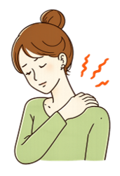
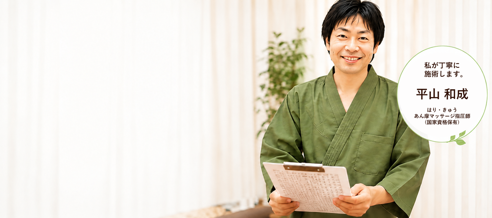
国家資格者が担当はり・きゅう・あん摩マッサージ指圧師
横浜市都筑区早渕東山田駅・仲町台駅エリア
初回お試し 5,000円カウンセリング＋施術
電話・LINE予約スクロール中も下部からすぐ相談
こんなお悩みありませんか？
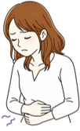
胃腸の不調がある
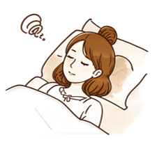
ストレスや不眠で困っている
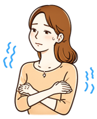
冷えやむくみが気になる
その不調、氣もち院におまかせください！
鍼灸マッサージの効果
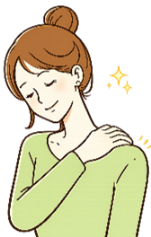
肩こり・腰痛の緩和
首・肩・背中の緊張をやわらげ、血流が巡りやすい状態へ整えます。
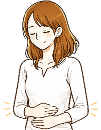
胃腸の調子を整える
お腹まわりの緊張をゆるめ、胃腸の働きに関わる自律神経のバランスを整えます。
疲労回復・
自律神経の調整
眠りの浅さや慢性的な疲れに、呼吸が深くなりやすいリラックス状態を目指します。
リラックス効果
心身のこわばりをゆるめ、施術後にほっと一息つけるような時間を大切にします。
Treatment Policy
痛みだけを追わず、原因になりやすい緊張・冷え・巡りまで見る施術
肩こりや腰痛は、つらい場所だけをもみほぐせば終わりではありません。姿勢、仕事中の動き、睡眠、冷え、ストレスなどが重なり、身体に負担が集まっている場合があります。
氣もち院では、カウンセリングでお悩みを伺い、鍼灸とマッサージを組み合わせながら、一人ひとりに合わせた施術を行います。強い刺激で無理に変えるのではなく、安心して受けられるやさしい施術を大切にしています。
施術で大切にしていること
- 初めての方にも分かりやすく説明すること
- 痛みの少ない、やさしい刺激で進めること
- その日の体調に合わせて内容を調整すること
- 施術後の過ごし方も丁寧にお伝えすること
氣もち院が選ばれる理由
丁寧なカウンセリング
お悩みをしっかり伺い、最適な施術をご提案します。
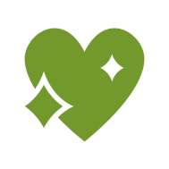
痛みの少ない施術
初めての方も安心できる、やさしい施術です。
国家資格者が担当
はり・きゅう・あん摩マッサージ指圧師が対応します。
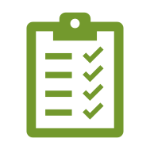
オーダーメイド施術
症状や体質に合わせて施術内容を調整します。
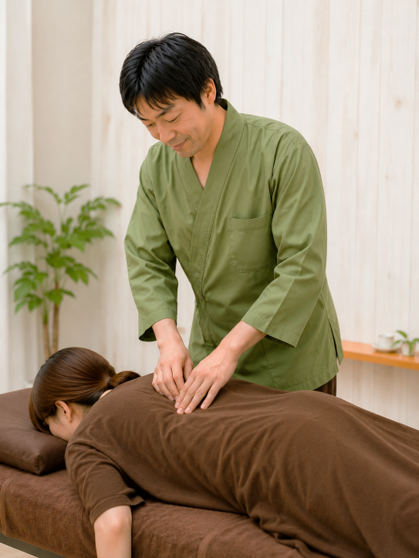
First Visit
初めての方へ
ご予約
お電話またはLINEから、ご希望日時とお悩みをお知らせください。
カウンセリング
肩こり・腰痛・不眠・冷えなど、気になる症状や生活状況を伺います。
施術
お身体の状態を確認しながら、鍼灸マッサージをやさしく行います。
アフターケア
施術後の変化を確認し、日常で気をつけたいポイントもお伝えします。
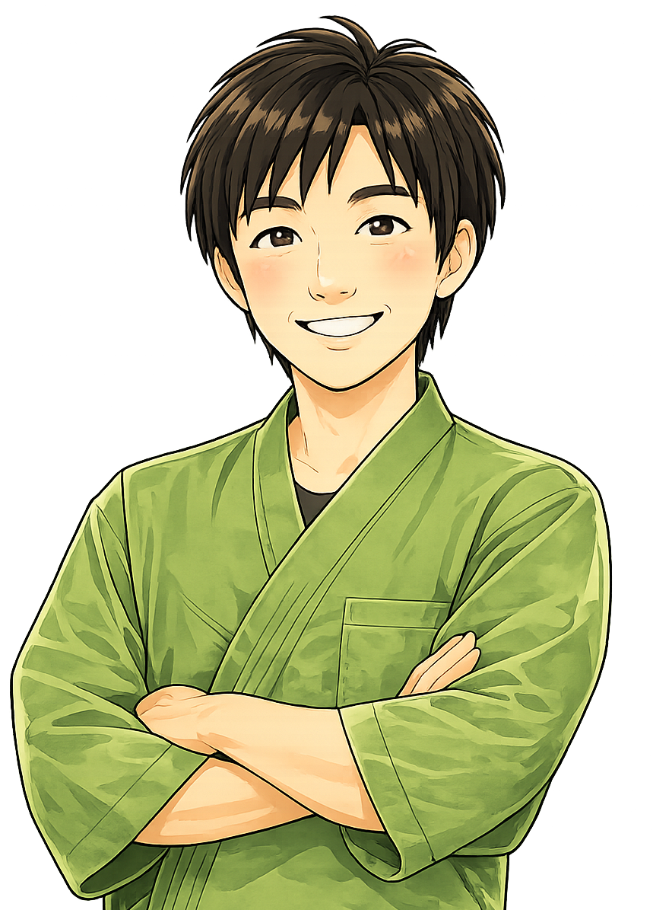
Profile
施術者紹介
平山 和也
鍼灸マッサージ氣もち院では、国家資格を持つ施術者が、お悩みを丁寧に伺いながら施術を行います。初めて鍼灸を受ける方にも安心していただけるよう、分かりやすい説明とやさしい施術を心がけています。
- 保有資格
- はり師・きゅう師・あん摩マッサージ指圧師
- 店舗名
- 鍼灸マッサージ氣もち院
- 運営会社
- 氣もち院株式会社
- 所在地
- 神奈川県横浜市都筑区早渕2丁目12番25号
Community Activity
横浜市都筑区で地域講座・健康教室も行っています
都筑区まちの先生登録者として、親子や地域の皆さまの健康づくりをサポートしています。治療院での施術だけでなく、ご家庭でできるセルフケアやふれあいの大切さもお伝えしています。
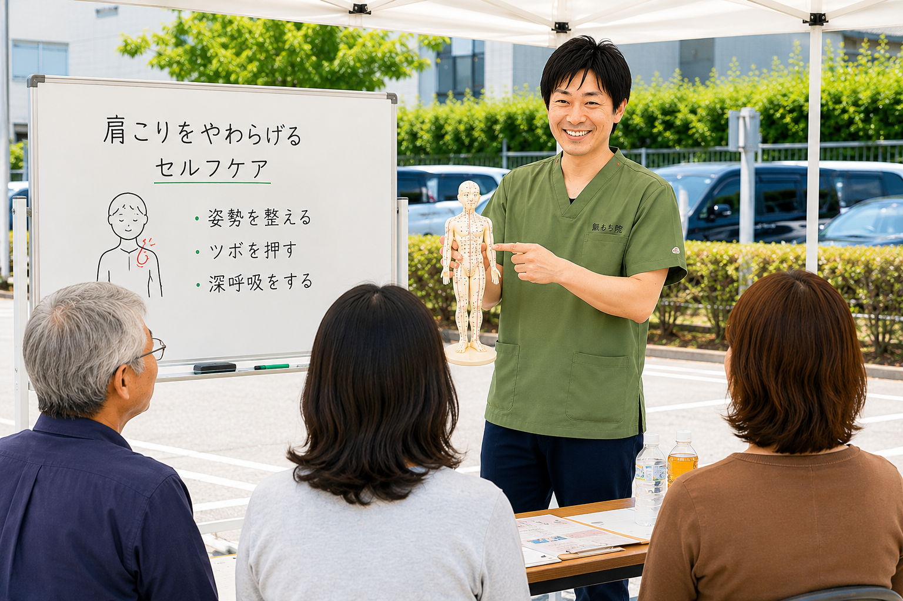
Program 01
親子のふれあい・癒しマッサージ講座
親子のふれあいの大切さをお伝えしながら、実技を行います。幼児・子どもの幸せホルモンが増えるマッサージや、親御さんの日頃の疲れを癒すマッサージも体験いただけます。
- 対象：乳幼児・小学生・一般の方など
- 内容：指導・講義・実技・施術
- 材料費：不要
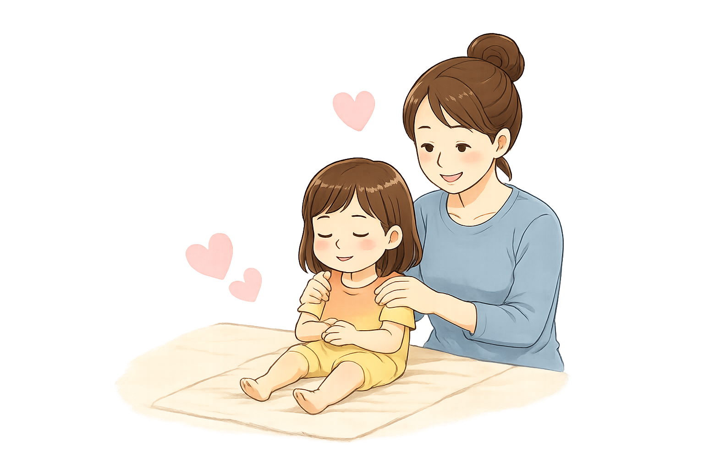
Program 02
自分で治すツボ押しマッサージ講座
実際に施術を受けていただきながら、ご本人で押しやすいツボを選定し、自分でできるツボ押し・マッサージのやり方をお伝えします。
- 対象：中学生・一般・高齢者の方など
- 内容：セルフケア指導・実技・施術
- 材料費：不要
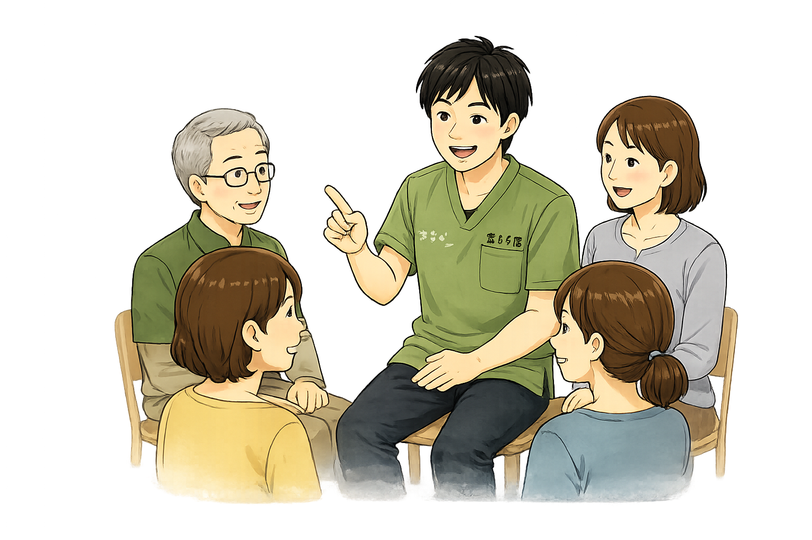
※参加人数が10名以上の場合は、時間が延びる場合があります。腰や臀部のマッサージが必要な場合は、横になれる場所・布団・ベッド等が必要です。駐車場の確保をお願いする場合があります。
患者様の声
肩こり・不眠・冷え・胃腸の不調など、年代やお悩みに合わせて丁寧に施術しています。
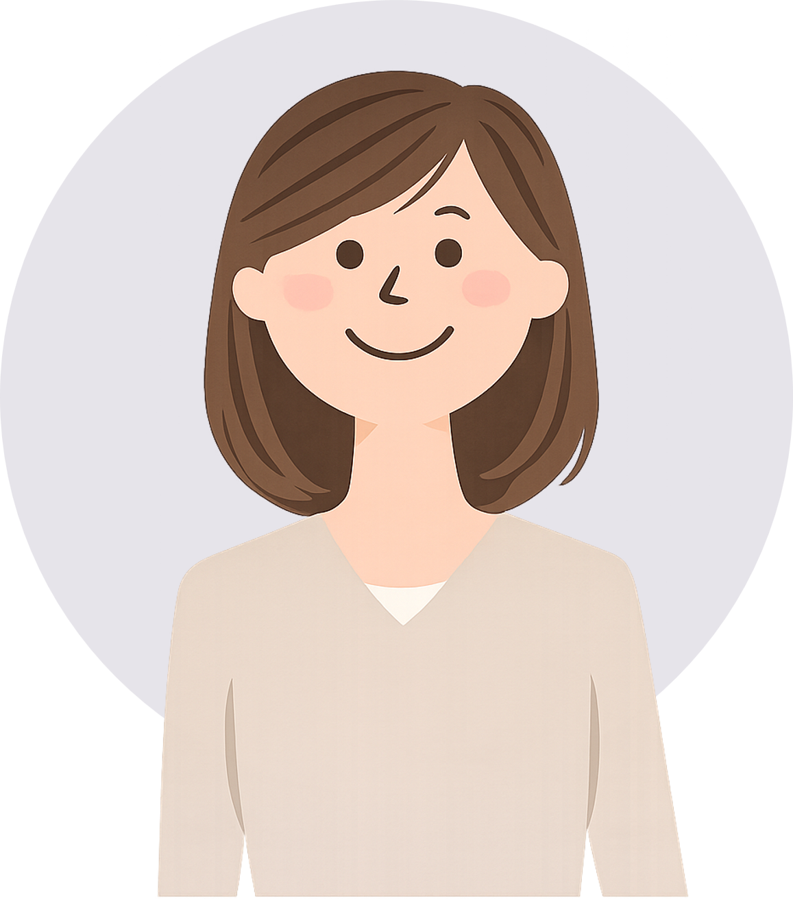
40代 女性｜肩こり ★★★★★
長年の肩こりで首まわりが重かったのですが、施術後は体が軽くなり、夜も眠りやすくなりました。
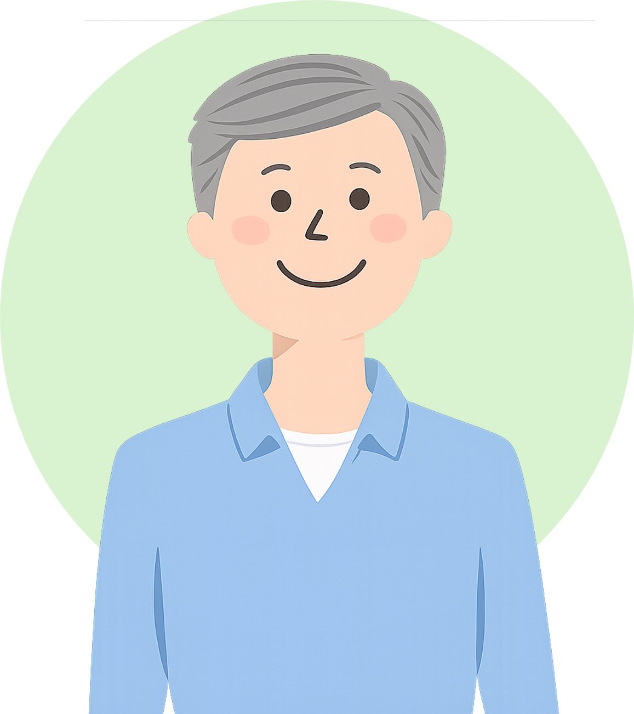
50代 男性｜頭痛 ★★★★★
丁寧に話を聞いてくれて安心できます。首肩のこわばりが楽になり、仕事にも集中しやすくなりました。
30代 女性｜冷え ★★★★★
冷えやむくみが気になっていましたが、施術後は体がポカポカして、リラックスできました。
もっと見る
10代 男性｜部活の肘 ★★★★★
野球部で肘の違和感があり相談しました。体の使い方も教えてもらえて、練習前後のケアを意識できるようになりました。
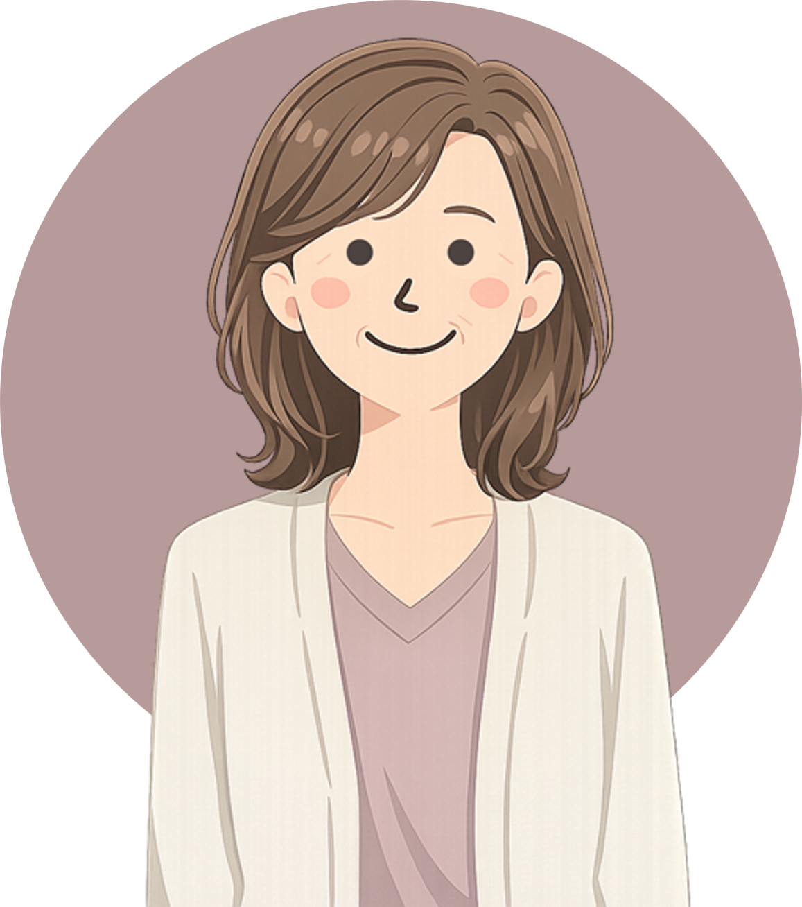
50代 女性｜腰痛 ★★★★★
腰まわりの重さが気になっていました。やさしく確認しながら進めてくれるので、初めてでも安心して受けられました。
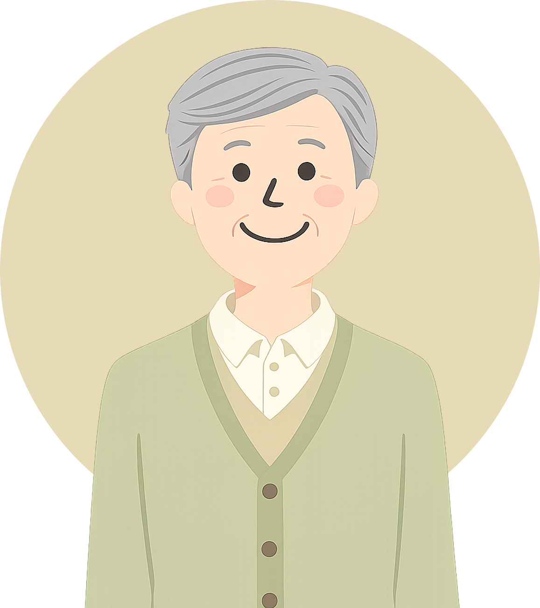
60代 男性｜疲労感 ★★★★★
年齢とともに疲れが抜けにくくなり相談しました。施術後は肩まわりが楽になり、体がすっと軽く感じました。
よくあるご質問
鍼は痛いですか？
痛みの少ないやさしい施術を心がけています。初めての方にも不安が少ないよう、お身体の状態を確認しながら丁寧に進めます。
どのような症状に対応していますか？
肩こり、腰痛、疲労感、頭痛、不眠、冷え、むくみ、胃腸の不調などのお悩みに対応しています。
予約は必要ですか？
お待たせしないため、事前予約をおすすめしています。電話またはLINEからご相談ください。
もっと見る
初回料金はいくらですか？
初めての方限定で、カウンセリングと施術を含むお試し施術キャンペーンを5,000円税込でご案内しています。
所在地はどこですか？
神奈川県横浜市都筑区早渕2丁目12番25号です。グリーンライン東山田駅、ブルーライン仲町台駅周辺からご来院いただけます。
施術者はどのような資格を持っていますか？
平山和也が、はり師・きゅう師・あん摩マッサージ指圧師の国家資格を保有しています。
東山田駅や仲町台駅周辺から通えますか？
はい。東山田駅・仲町台駅周辺からご来院いただける横浜市都筑区早渕の鍼灸マッサージ院です。
肩こりや腰痛以外も相談できますか？
はい。頭痛、眼精疲労、不眠、冷え、むくみ、胃腸の不調などもご相談いただけます。
地域向けの講座もお願いできますか？
はい。都筑区まちの先生登録者として、親子のふれあい・癒しマッサージ講座や、自分で治すツボ押し・マッサージ講座などにも対応しています。
Local SEO
横浜市都筑区早渕で鍼灸マッサージをお探しの方へ
鍼灸マッサージ氣もち院は、神奈川県横浜市都筑区早渕2丁目12番25号にある鍼灸マッサージ院です。東山田駅・仲町台駅周辺で、肩こり・腰痛・頭痛・不眠・冷え・むくみなどのお悩みを相談できる場所をお探しの方は、お気軽にご相談ください。
地域の方が安心して通えるよう、丁寧なカウンセリング、痛みの少ない施術、国家資格者による対応を大切にしています。